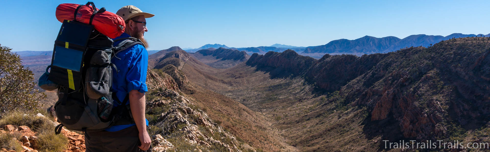
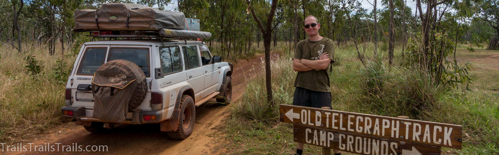
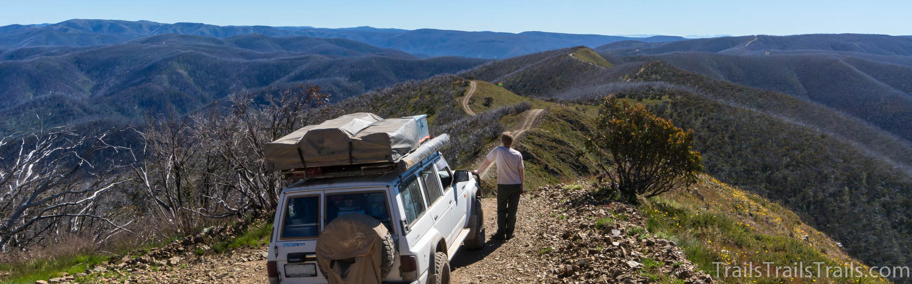

22 days Larapinta Trail Review Series
The Larapinta Trail is a 223 km long hiking trail in the Western MacDonnell Ranges near Alice Springs, NT in Outback Australia.
I've hiked this trail over a total of 22 days but it is typically hiked in 10 - 20 days. I took my time because I enjoy
exploring and being out here. This allowed me to hike many side trails which increased my walking distance to about 300 km.

Old Telegraph Track Review Series
The old Telegraph Track on the Cape York peninsula is an iconic 4x4 track in Australia's far north. The 116 km
can only be accessed during the dry season and take 1-2 days. There are many creeks to cross and you will
often have spectators at the more impressive crossings.

A Tribute to 4x4 in Australia
It's hard to explain but when I'm out here it all makes sense and I feel at peace. These videos
are a tribute to Australia and the journeys I've done: Cape York, Simpson Desert, Kimberley,
Victoria's High Country, Fraser Island, Canning Stock Route, ...
